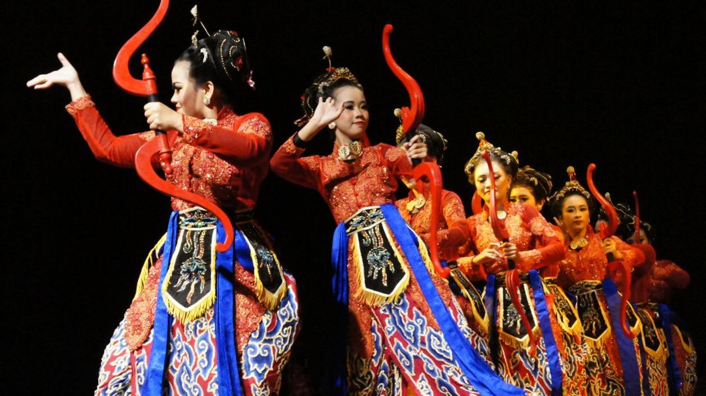
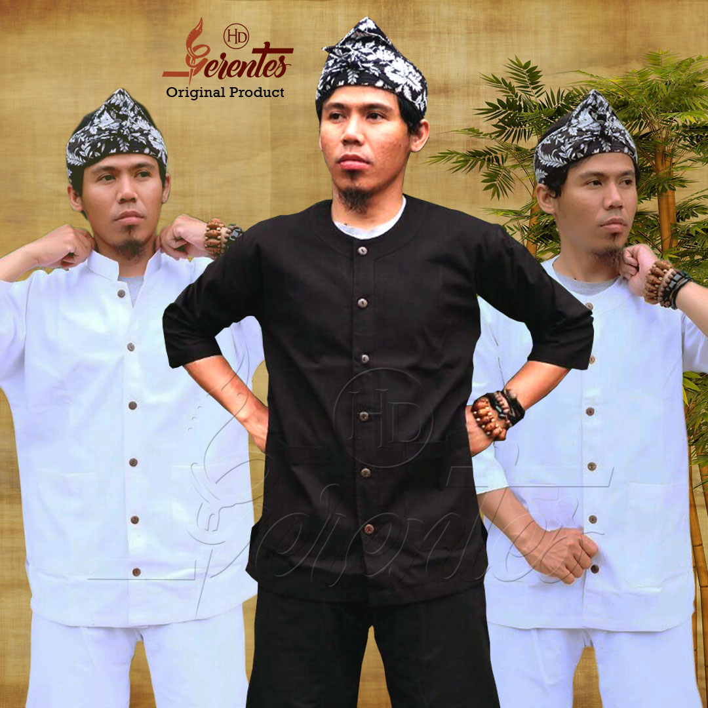
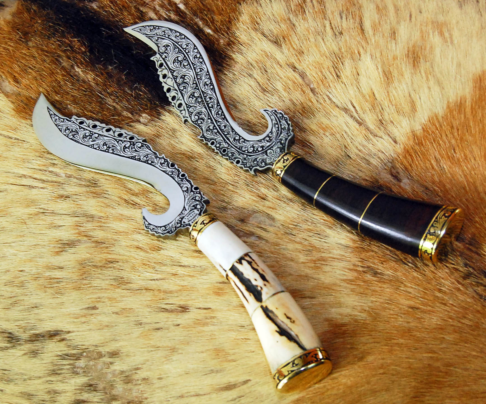
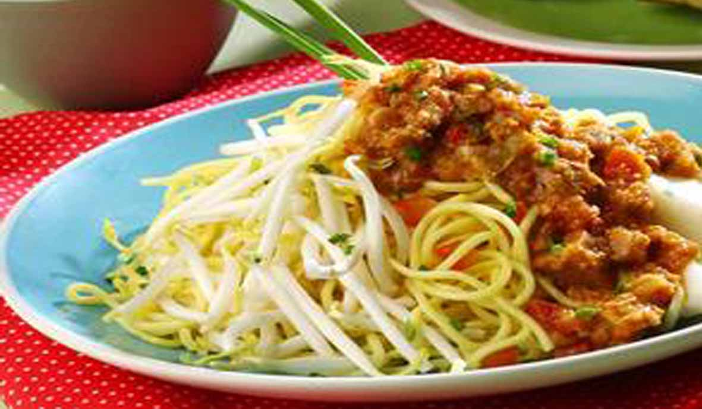

Sunda berasal dari bahasa Sanskerta yang bisa berarti 'cahaya' atau 'air'adalah sebuah suku di Jawa Barat yang terletak di bagian barat pulau jawa, di Indonesia.Suku Sunda (Urang Sunda, Cacarakan:ꦈꦫꦁꦱꦸꦤ꧀ꦝ)
memiliki istilah Tatar Pasundan yang berarti Jati diri yang mempersatukan orang Sunda adalah bahasa dan budayanya. Orang Sunda dikenal memiliki sifat optimistis, ramah, sopan, riang dan bersahaja.
Menurut para ahli ,Sunda merujuk pada ibu kota Kerajaan Tarumanegara yang bernama Sundapura.
Sehingga masyarakat yang menghuni wilayah tersebut dikenal sebagai orang Sunda yang disebut hingga kini.
Kerajaan Tarumanegara merupakan salah satu kerajaan tertua di Nusantara yang terbukti dengan bukti prasasti dan berita naskah kuno di negeri Tiongkok.
Letak tepat kota Sundapura masih menjadi penelitian para ahli, apakah di Jakarta, Bekasi atau Karawang sekarang.
Hanya di Karawang terdapat situs percandian Batujaya seluas 5 km persegi yang menunjukkan tumbuh kembangnya kebudayaan sejak abad 2 Masehi hingga abad 12 Masehi.
Selain kaya akan sejarah, dan budaya nya,Sundajuga banyak destinasi objek wisatanya lho,ga kalah sama Bali deh bagusnya.
Sebagai manusia mesti lah kita bersyukur telah terlahir menjadi Warga Negara Indonesia , karna Indonesia kaya sekali akan keindahan alam nya.
Selain tempat wisata ada beberapa cirikhas dari Jawa Barat , sebagai berikut cirikhasnya .
- Tarian : Jaipong

Tari jaipong adalah sebuah tari daerah yang berasal dari Karawang, Jawa Barat yang berkembang pada tahun 60-an.
Mulanya tari jaipong dikenal dengan sebutan tari Banjet,
sebuah pertunjukan seni tari yang yang dipentaskan dengan gerakan tari yang diiringi oleh musik dengan instrumen gamelan sebagai pengiringnya.
- Baju Adat : Baju Pangsi

Pangsi merupakan salah satu pakaian adat yang berasal dari Tanah Sunda. Pakaian ini biasa digunakan oleh nenek moyang atau leluhur yang telah diwariskan secara turun-temurun hingga sekarang. Pangsi secara awam terlihat seperti pakaian hitam dari atas hingga bawah, digunakan untuk menutupi tubuh sebagai pelindung dari cuaca, lingkungan luar, dan sebagainya. Namun pakaian ini memiliki filosofi khusus berkaitan dengan kehidupan nenek moyang kala itu.
Pangsi merupakan akronim dari “Pangeusi Numpang ka Sisi”. Pakaian ini disebut demikian karena cara memakaiannya dibelitkan seperti memakai sarung. Secara keseluruhan pangsi dibagi mejadi tiga bagian, yakni Tangtung (memiliki arti asli “Tangtungan Ki Sunda Nyuwu Kana Suja“, yang bermakna “Berpendirian teguh sesuai aturan hudup“), Nangtung (“Nangtung, Jejeg, Ajeg dina Galur. Teu Unggut Kalinduan, Teu Gedag Kaanginan“, bermakna “Teguh dan kuat dalam berkeyakinan, serta bersemangat tinggi“), dan Samping (“Depe Depe Handap Asor“, dalam bahasa Indonesia artinya “Selalu rendah hati dan tidak sombong“).
Pakaian Pangsi dapat dibedakan menjadi dua, yakni bagian atas yang disebut Salontreng dan bagian bawah atau celana yang biasa dikenal dengan Pangsi. Namun dewasa ini masyarakat umumnya mengenal satu kesatuan pakaian adat ini dengan nama pangsi.
- Senjata : Kujang

Kujang mulai dibuat sekitar abad ke-8 atau ke-9, terbuat dari besi, baja dan bahan pamor, panjangnya sekitar 20 sampai 25 cm dan beratnya sekitar 300 gram.
Kujang merupakan perkakas yang merefleksikan ketajaman dan daya kritis dalam kehidupan juga melambangkan kekuatan dan keberanian untuk melindungi hak dan kebenaran.
Menjadi ciri khas, baik sebagai senjata, alat pertanian, perlambang, hiasan, ataupun cindera mata.
- Makanan Khas : Toge Goreng

Toge goreng atau taoge goreng adalah makanan khas Bogor yang mudah dibuat di rumah. Bahan toge goreng khas Bogor ini juga terbilang murah karena tidak menggunakan daging. Sebagai ganti protein, toge goreng menggunakan oncom.
Sementara bumbunya menggunakan taoco
Setelah kita melihat-lihat cirikhas Jawa Barat ,kita akan melihat Objek beberapa spot Objek wisata di Jawa Barat.